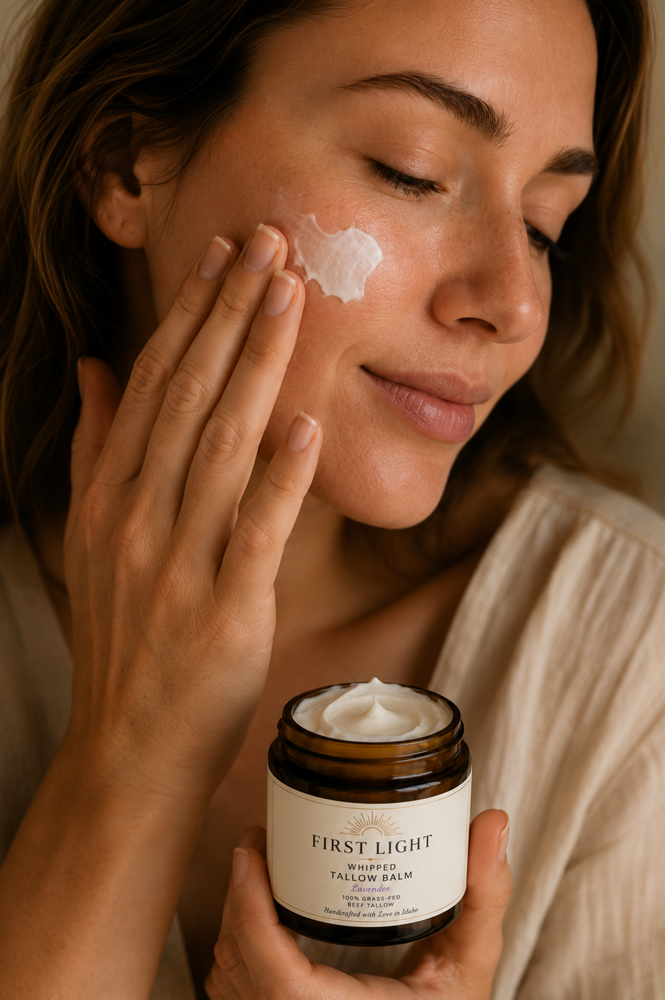

Whipped Tallow Balm · Handcrafted in Idaho
First Light
Organics
✦
Created Simply. Crafted Beautifully.
Handcrafted with Love in IdahoWhipped Tallow Balm · Handcrafted in Idaho
Created Simply. Crafted Beautifully.
Handcrafted with Love in IdahoFive Varieties Available

First Light Organics
Whipped Tallow Balm
4 fl oz jar · 2.35 oz net wt · $32.00
Grass-fed beef tallow, organic jojoba oil, arrowroot powder, organic lavender and frankincense essential oils. That is the complete list.

First Light Organics
Whipped Tallow Balm
4 fl oz jar · 2.35 oz net wt · $32.00
Grass-fed beef tallow, organic jojoba oil, arrowroot powder, cedarwood essential oil. Warm, grounded, and woody. A scent that settles into the skin and stays.

First Light Organics
Whipped Tallow Balm
4 fl oz jar · 2.35 oz net wt · $32.00
Grass-fed beef tallow, organic jojoba oil, arrowroot powder, vanilla essential oil. Soft and warm, with a sweetness that feels natural rather than added.
Why First Light
Grass-fed, pasture-raised beef tallow from Idaho farms. We know exactly where our ingredients come from.
Every jar is made by hand in our Boise kitchen. We never outsource to large-scale manufacturing.
Nothing you can't pronounce. Grass-fed tallow, organic jojoba, arrowroot, essential oils. That's the whole list.
No parabens. No petroleum. No synthetic fragrances. No artificial colors. Just what your skin actually needs.
The Difference
Tallow is rendered from grass-fed beef fat. Before modern skincare filled shelves with petroleum byproducts and synthetic compounds, families relied on animal fats to care for their skin through every season.
The reason it works is biology. Tallow has a fatty acid profile remarkably similar to the natural oils your skin produces. Your skin recognizes it, absorbs it, and uses it.
Inside Every Jar
100% locally sourced from pasture-raised cattle in Idaho. The foundation of every jar.
Remarkably similar to skin's natural sebum. Absorbs quickly and helps balance moisture long-term.
A plant-derived powder that creates a silky, non-greasy finish and helps the balm absorb smoothly.
Carefully selected organic essential oils that provide a clean, natural scent and complement the skin-nourishing base.
Our Promise
We believe great skincare should be simple enough to explain to a child, and good enough that your grandmother would recognize every ingredient. Grass-fed tallow. Organic jojoba. Arrowroot. Essential oils. That is the whole list.
Grass-fed beef tallow. Organic jojoba oil. Arrowroot powder. Essential oils. Every ingredient earns its place. Nothing added for appearance, shelf life, or cost.
Our tallow comes from 100% grass-fed cattle. The quality of the source changes the quality of the product. We do not compromise on this.
Every batch is made by hand in Boise, Idaho. Small-batch production means more care, more consistency, and more accountability in every jar.
Our Story

Tatiana made the first batch of First Light in our Boise kitchen, for our family. We live in the high desert, where the air dries out your skin fast, and she wanted something simple, real, and made with ingredients we could actually trust.
She shared it with friends. People asked for more. Local stores started carrying it. What began as a kitchen project became something worth sharing more widely.
"Because of the tender mercy of our God, by which the sunrise shall visit us from on high..." Luke 1:78
Every jar is still made by hand in Boise, with the same natural ingredients from that first batch.